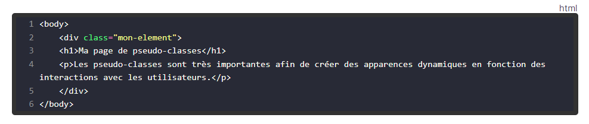

Certification HTML5 - CSS3
Dans cette formation, j'ai appris comment utiliser HTML5 et CSS3, les deux langages de programmation à la base de tous les sites web. Je me suis formé sur Openclassrooms dans lequel j'ai appris à crer des page, les mettre en forme et rajouter du style. J'ai aussi suivi des videos sur youtube.
" Formation Open ClassRooms "
Lien internet : https://openclassrooms.com/fr/courses/1603881-apprenez-a-creer-votre-site-web-avec-html5-et-css3
Lien youtube :https://www.youtube.com/watch?v=64X4ZJ-F7EI&list=PLBOL5k415M_VKdjNFJ68ZMUgvBmf_yIF1&index=1
Mes objectifs
- Utiliser du code HTML
- Structurer une page web en HTML
- Mettre en forme une page web en CSS
- Organiser les éléments d’une page web grâce au CSS
- Modifier l'agencement d'une page HTML avec CSS
- Intégrer des formules dans une page web
- Adapter une page pour les petites résolutions en CSS
- comprendre le coe d'une page hmtl, css.
Pourquoi cette formation ?
- Prendre du savoir et du savoir-faire en liaison avec ma formation en BTS SIO
- Me servir lors de mon stage
- Compétences qui me serviront dans mon futur professionnel
- Pour m'entrainer et m'amuser à creer des sites;
Les outils que j'ai utilisé
- Navigateur WEB avec les differents site qui m'ont permis de de recuperer des exemple de couleur degradé ou de tester les effet ombres sur des éléments
- L'interface de Développement : Visual Studio Code
Quelques notions à travers des images
Element dynamique
Avec le css, on peut rajouter du dynamisme a nos éléments pour donner vie a notre site. C'est-à-dire que l'on va inserer les balises à modifier et les pseudo-classepermettant dynamiser les éléments html de notre site. Par exemple si l'on veut que nos élément change de couleur lorsqu'on les survols, on ajoute le pseudo-classe :hover apres avoir saisie l'élément html dans le selecteur. Puis il suufit de rajouter dans le bloc de codee la couleur que va prendre notre élément.

Création de tableau
Les formulaire html vont nous permettre des récupérer les données que l'utilisateurs va saisir dans les differents champs
Les formulaire sont utilisé pour permettre à l'utilisateur de s'inscrire ou de se connecter ou bine de nous envoyer desmessages.
On va donc pur cela créer creer differents formulaire dans comme ceux citez au dessus: le formulmaire d'inscription, le formulaire de connexion, et le formulaire de contact.
On peut voir une balise label qu'on place au-dessus de la balise input pour indiquer à l'utilisateur les donnée a saisir.

Les tableaux
Les tableaux en HTML vont nous permettre de présenter des données de manière organisée.

Les CSS
Les Cascading StyleSheets — ou CSS — (Feuilles de style en cascade) sont la première technique à apprendre après le HTML popur stylisé nos pages.
Avec le css on peut modifier lalargeur, agrandir les marge d'un bloc, alinger les texte, gerer police, ajouter desbordure...
Tous ces élément permettentd'ajouter de l'esthétic anotrepage et permette ausis une meilleur lisisbilité et une meilleur organisation d'un texte

Ma progression